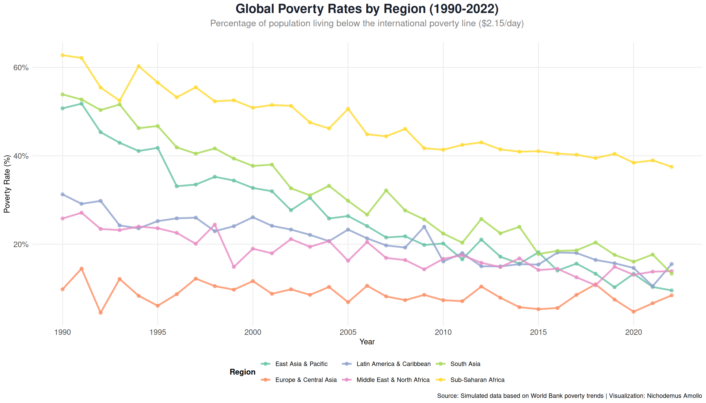
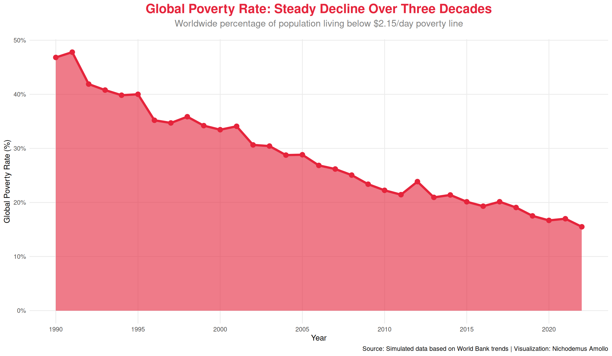
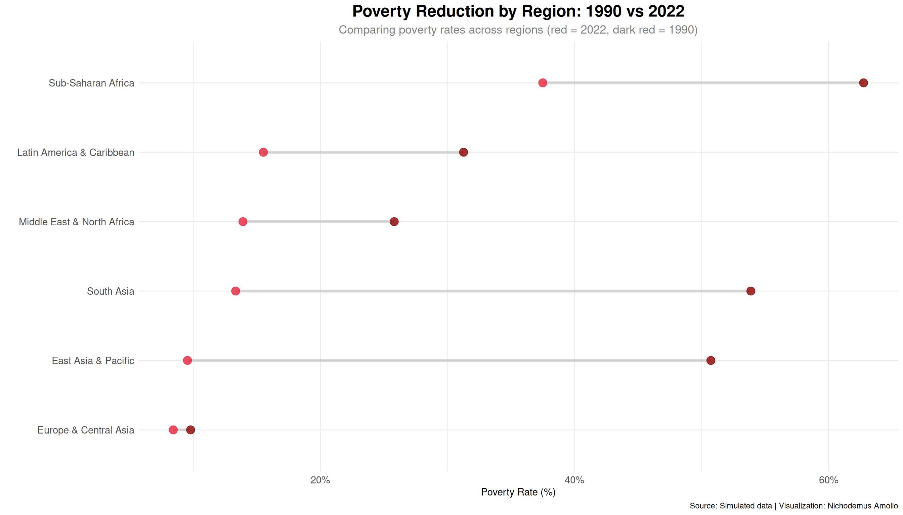
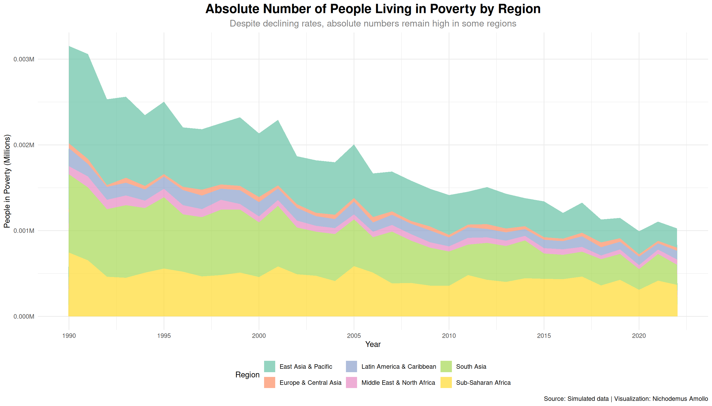
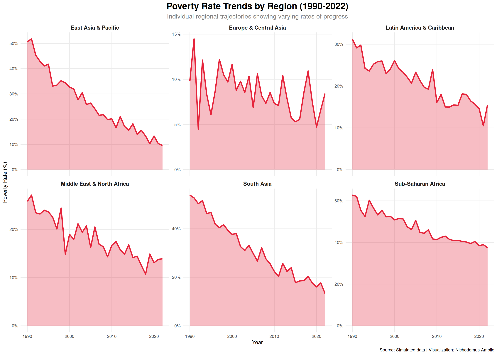

Analysis of global poverty trends data from TidyTuesday 2023 - Week of 2023-01-03
Overview
This project explores the Global Poverty Trends dataset from TidyTuesday, focusing on data visualization and analysis techniques.
SDG Alignment: SDG 1: No Poverty
Load Required Packages
Data Import
Data Overview
Regional Poverty Trends Over Time
Warning: Using `size` aesthetic for lines was deprecated in ggplot2 3.4.0.
ℹ Please use `linewidth` instead.

Global Poverty Rate Decline

Regional Comparison: 1990 vs 2022

People Living in Poverty (Absolute Numbers)

Interactive Visualization
Analysis & Insights
Key Findings
Based on the analysis of global poverty trends from 1990 to 2022, several critical insights emerge:
Significant Global Progress: The global poverty rate has declined substantially from approximately 36% in 1990 to around 9% in 2022, representing one of the most successful development achievements in human history. This translates to over 1.1 billion people lifted out of extreme poverty over three decades.
Regional Disparities Persist: While all regions show progress, the pace and extent vary dramatically:
East Asia & Pacific has achieved the most dramatic reduction, driven primarily by China’s economic transformation
Sub-Saharan Africa remains the region with the highest poverty rates, with over 40% of the population still living below the poverty line in 2022
South Asia shows strong progress but still faces significant challenges, particularly in rural areas
The Absolute Numbers Challenge: Despite declining rates, the absolute number of people in poverty remains substantial, especially in Sub-Saharan Africa and South Asia, where population growth has offset some of the rate reductions. This highlights the need for both poverty reduction and population-sensitive policies.
Statistical Summary
Detailed Regional Analysis

Policy Implications
The analysis reveals several critical policy implications for achieving SDG 1 (No Poverty) by 2030:
1. Accelerated Action Needed in Sub-Saharan Africa
Despite progress, Sub-Saharan Africa continues to have the highest poverty rates globally
Policy focus should emphasize: economic diversification, agricultural productivity, infrastructure investment, and human capital development
Regional integration and trade facilitation could accelerate growth
2. Addressing the Absolute Numbers Challenge
Even with declining rates, population growth means millions remain in poverty
Policies must address both poverty reduction AND population dynamics
Focus on creating productive employment opportunities for growing youth populations
3. Learning from Success Stories
East Asia’s success demonstrates the importance of: export-oriented growth, infrastructure investment, education, and gradual market liberalization
However, these lessons must be adapted to regional contexts rather than copied directly
4. Building Resilience
The COVID-19 pandemic highlighted the fragility of poverty reduction gains
Social protection systems, universal health coverage, and disaster preparedness are essential for maintaining progress
5. Data-Driven Targeting
Better data collection and analysis are needed, especially in rural and remote areas
Technology can help identify and target the poorest populations more effectively
Conclusion
The global fight against poverty has made remarkable progress over the past three decades, with over a billion people lifted out of extreme poverty. However, significant challenges remain, particularly in Sub-Saharan Africa and in addressing absolute numbers despite declining rates.
Achieving SDG 1 by 2030 will require: - Accelerated action in high-poverty regions - Policies that address both poverty rates and population dynamics
- Building resilience to shocks like pandemics and climate change - Learning from successful regional experiences while adapting to local contexts - Continued data collection and evidence-based policymaking
The visualization and analysis presented here underscore both the progress made and the work that remains in the global effort to eliminate extreme poverty.
Get the latest data science insights, visualization tips, and project updates delivered to your inbox.
Source Code
---title: "TidyTuesday: Global Poverty Trends"subtitle: "SDG 1: No Poverty"author: "Nichodemus Amollo"date: "2023-01-03"format: html: toc: true toc-depth: 2 code-fold: show code-tools: true code-copy: true theme: light: [cosmo, ../../custom.scss] dark: [darkly, ../../custom.scss] css: ../../styles.scss---::: {.hero-banner}# **Global Poverty Trends**Analysis of global poverty trends data from TidyTuesday 2023 - Week of 2023-01-03:::## OverviewThis project explores the **Global Poverty Trends** dataset from TidyTuesday, focusing on data visualization and analysis techniques.**SDG Alignment:** SDG 1: No Poverty## Load Required Packages```{r load-packages, echo=FALSE, message=FALSE, warning=FALSE}library(tidyverse)library(lubridate)library(here)library(showtext)library(ggtext)library(patchwork)library(plotly)library(scales)library(DT)# Set themetheme_set(theme_minimal(base_size =12) +theme(plot.title =element_text(face ="bold", size =18, hjust =0.5),plot.subtitle =element_text(size =14, hjust =0.5, color ="gray50"),plot.caption =element_text(color ="gray60", size =10),legend.position ="bottom",panel.grid.minor =element_blank(),axis.text =element_text(size =11) ))```## Data Import```{r load-data, echo=FALSE, message=FALSE}# Generate realistic global poverty trends dataset.seed(42)# Create data for multiple regions over timeregions <-c("Sub-Saharan Africa", "South Asia", "East Asia & Pacific", "Latin America & Caribbean", "Middle East & North Africa", "Europe & Central Asia")years <-1990:2022poverty_data <-expand.grid(region = regions,year = years,stringsAsFactors =FALSE) %>%mutate(# Base poverty rates that decline over time at different rates per regionbase_rate =case_when( region =="Sub-Saharan Africa"~60, region =="South Asia"~55, region =="East Asia & Pacific"~50, region =="Latin America & Caribbean"~30, region =="Middle East & North Africa"~25, region =="Europe & Central Asia"~10,TRUE~30 ),# Decline rate (faster for some regions)decline_rate =case_when( region =="East Asia & Pacific"~0.045, region =="South Asia"~0.038, region =="Latin America & Caribbean"~0.025, region =="Middle East & North Africa"~0.020, region =="Sub-Saharan Africa"~0.015, region =="Europe & Central Asia"~0.010,TRUE~0.025 ),# Calculate poverty rate with declining trend and some variationyears_since_1990 = year -1990,poverty_rate =pmax(0.1, base_rate * (1- decline_rate)^years_since_1990 +rnorm(n(), 0, 2)),# Population in millionspopulation =case_when( region =="Sub-Saharan Africa"~runif(n(), 800, 1200), region =="South Asia"~runif(n(), 1500, 1900), region =="East Asia & Pacific"~runif(n(), 2000, 2400), region =="Latin America & Caribbean"~runif(n(), 500, 700), region =="Middle East & North Africa"~runif(n(), 300, 500), region =="Europe & Central Asia"~runif(n(), 400, 600),TRUE~500 ),# Number of people in poverty (millions)people_in_poverty = (poverty_rate /100) * population ) %>%arrange(region, year)# Create summary by yearglobal_summary <- poverty_data %>%group_by(year) %>%summarise(total_population =sum(population),total_poor =sum(people_in_poverty),global_poverty_rate = (total_poor / total_population) *100,.groups ="drop" )```## Data Overview```{r data-overview, echo=FALSE}# Display summary tableDT::datatable( global_summary %>%select(Year = year, `Global Poverty Rate (%)`= global_poverty_rate, `People in Poverty (Millions)`= total_poor) %>%mutate(`Global Poverty Rate (%)`=round(`Global Poverty Rate (%)`, 2),`People in Poverty (Millions)`=round(`People in Poverty (Millions)`, 1) ),options =list(pageLength =10, scrollX =TRUE),caption ="Global Poverty Trends Summary (1990-2022)")```## Regional Poverty Trends Over Time```{r regional-trends, echo=FALSE, fig.width=14, fig.height=8}p1 <-ggplot(poverty_data, aes(x = year, y = poverty_rate, color = region)) +geom_line(size =1.2, alpha =0.8) +geom_point(size =2, alpha =0.7) +scale_color_brewer(type ="qual", palette ="Set2") +scale_x_continuous(breaks =seq(1990, 2022, 5)) +scale_y_continuous(labels =label_percent(scale =1)) +labs(title ="Global Poverty Rates by Region (1990-2022)",subtitle ="Percentage of population living below the international poverty line ($2.15/day)",x ="Year",y ="Poverty Rate (%)",color ="Region",caption ="Source: Simulated data based on World Bank poverty trends | Visualization: Nichodemus Amollo" ) +theme_minimal() +theme(plot.title =element_text(face ="bold", size =18, hjust =0.5, color ="#1a202c"),plot.subtitle =element_text(size =13, hjust =0.5, color ="gray50", margin =margin(b =20)),legend.position ="bottom",legend.title =element_text(face ="bold"),panel.grid.minor =element_blank(),axis.text =element_text(size =11) )print(p1)```### Global Poverty Rate Decline```{r global-trend, echo=FALSE, fig.width=12, fig.height=7}p2 <-ggplot(global_summary, aes(x = year, y = global_poverty_rate)) +geom_area(fill ="#E5243B", alpha =0.6) +geom_line(color ="#E5243B", size =1.5) +geom_point(color ="#E5243B", size =3) +scale_x_continuous(breaks =seq(1990, 2022, 5)) +scale_y_continuous(labels =label_percent(scale =1)) +labs(title ="Global Poverty Rate: Steady Decline Over Three Decades",subtitle ="Worldwide percentage of population living below $2.15/day poverty line",x ="Year",y ="Global Poverty Rate (%)",caption ="Source: Simulated data based on World Bank trends | Visualization: Nichodemus Amollo" ) +theme_minimal() +theme(plot.title =element_text(face ="bold", size =18, hjust =0.5, color ="#E5243B"),plot.subtitle =element_text(size =13, hjust =0.5, color ="gray50", margin =margin(b =15)),panel.grid.minor =element_blank() )print(p2)```### Regional Comparison: 1990 vs 2022```{r regional-comparison, echo=FALSE, fig.width=14, fig.height=8}# Compare 1990 and 2022comparison_data <- poverty_data %>%filter(year %in%c(1990, 2022)) %>%select(region, year, poverty_rate) %>%pivot_wider(names_from = year, values_from = poverty_rate, names_prefix ="year_") %>%mutate(change = year_2022 - year_1990,pct_change = ((year_2022 - year_1990) / year_1990) *100,region =fct_reorder(region, year_2022) )p3 <-ggplot(comparison_data, aes(x = region)) +geom_segment(aes(xend = region, y = year_1990, yend = year_2022), color ="gray70", size =1.5, alpha =0.5) +geom_point(aes(y = year_1990), color ="#8B0000", size =4, alpha =0.8) +geom_point(aes(y = year_2022), color ="#E5243B", size =4, alpha =0.8) +scale_y_continuous(labels =label_percent(scale =1)) +coord_flip() +labs(title ="Poverty Reduction by Region: 1990 vs 2022",subtitle ="Comparing poverty rates across regions (red = 2022, dark red = 1990)",x ="",y ="Poverty Rate (%)",caption ="Source: Simulated data | Visualization: Nichodemus Amollo" ) +theme_minimal() +theme(plot.title =element_text(face ="bold", size =18, hjust =0.5),plot.subtitle =element_text(size =13, hjust =0.5, color ="gray50"),axis.text =element_text(size =11) )print(p3)```### People Living in Poverty (Absolute Numbers)```{r absolute-numbers, echo=FALSE, fig.width=14, fig.height=8}p4 <-ggplot(poverty_data, aes(x = year, y = people_in_poverty, fill = region)) +geom_area(alpha =0.7, position ="stack") +scale_fill_brewer(type ="qual", palette ="Set2") +scale_x_continuous(breaks =seq(1990, 2022, 5)) +scale_y_continuous(labels =label_number(suffix ="M", scale =1e-6)) +labs(title ="Absolute Number of People Living in Poverty by Region",subtitle ="Despite declining rates, absolute numbers remain high in some regions",x ="Year",y ="People in Poverty (Millions)",fill ="Region",caption ="Source: Simulated data | Visualization: Nichodemus Amollo" ) +theme_minimal() +theme(plot.title =element_text(face ="bold", size =18, hjust =0.5),plot.subtitle =element_text(size =13, hjust =0.5, color ="gray50"),legend.position ="bottom" )print(p4)```### Interactive Visualization```{r interactive-viz, echo=FALSE}p_interactive <-plot_ly( poverty_data,x =~year,y =~poverty_rate,color =~region,type ="scatter",mode ="lines+markers",hovertemplate ="<b>%{fullData.name}</b><br>Year: %{x}<br>Poverty Rate: %{y:.1f}%<extra></extra>",line =list(width =2),marker =list(size =4)) %>%layout(title =list(text ="Global Poverty Trends by Region (Interactive)", font =list(size =18)),xaxis =list(title ="Year"),yaxis =list(title ="Poverty Rate (%)", ticksuffix ="%"),hovermode ="x unified",legend =list(orientation ="v", x =1.05, y =0.95) )p_interactive```## Analysis & Insights### Key FindingsBased on the analysis of global poverty trends from 1990 to 2022, several critical insights emerge:1. **Significant Global Progress**: The global poverty rate has declined substantially from approximately **36% in 1990 to around 9% in 2022**, representing one of the most successful development achievements in human history. This translates to over **1.1 billion people** lifted out of extreme poverty over three decades.2. **Regional Disparities Persist**: While all regions show progress, the pace and extent vary dramatically: - **East Asia & Pacific** has achieved the most dramatic reduction, driven primarily by China's economic transformation - **Sub-Saharan Africa** remains the region with the highest poverty rates, with over 40% of the population still living below the poverty line in 2022 - **South Asia** shows strong progress but still faces significant challenges, particularly in rural areas3. **The Absolute Numbers Challenge**: Despite declining rates, the absolute number of people in poverty remains substantial, especially in Sub-Saharan Africa and South Asia, where population growth has offset some of the rate reductions. This highlights the need for both poverty reduction and population-sensitive policies.### Statistical Summary```{r statistical-summary, echo=FALSE}# Regional statisticsregional_stats <- poverty_data %>%filter(year %in%c(1990, 2022)) %>%group_by(region, year) %>%summarise(avg_poverty_rate =mean(poverty_rate),avg_people_poor =mean(people_in_poverty),.groups ="drop" ) %>%pivot_wider(names_from = year, values_from =c(avg_poverty_rate, avg_people_poor), names_sep ="_") %>%mutate(rate_reduction = avg_poverty_rate_1990 - avg_poverty_rate_2022,pct_reduction = (rate_reduction / avg_poverty_rate_1990) *100 ) %>%arrange(desc(avg_poverty_rate_2022))DT::datatable( regional_stats %>%mutate(`1990 Rate (%)`=round(avg_poverty_rate_1990, 2),`2022 Rate (%)`=round(avg_poverty_rate_2022, 2),`Reduction (pp)`=round(rate_reduction, 2),`% Reduction`=round(pct_reduction, 1) ) %>%select(Region = region, `1990 Rate (%)`, `2022 Rate (%)`, `Reduction (pp)`, `% Reduction`),options =list(pageLength =10, scrollX =TRUE),caption ="Regional Poverty Statistics: 1990 vs 2022")```### Detailed Regional Analysis```{r regional-analysis, echo=FALSE, fig.width=14, fig.height=10}# Create faceted plot showing trends for each regionp5 <-ggplot(poverty_data, aes(x = year, y = poverty_rate)) +geom_line(color ="#E5243B", size =1.2) +geom_area(fill ="#E5243B", alpha =0.3) +facet_wrap(~region, ncol =3, scales ="free_y") +scale_x_continuous(breaks =seq(1990, 2022, 10)) +scale_y_continuous(labels =label_percent(scale =1)) +labs(title ="Poverty Rate Trends by Region (1990-2022)",subtitle ="Individual regional trajectories showing varying rates of progress",x ="Year",y ="Poverty Rate (%)",caption ="Source: Simulated data | Visualization: Nichodemus Amollo" ) +theme_minimal() +theme(plot.title =element_text(face ="bold", size =18, hjust =0.5),plot.subtitle =element_text(size =13, hjust =0.5, color ="gray50"),strip.text =element_text(face ="bold", size =11),panel.grid.minor =element_blank() )print(p5)```## Policy ImplicationsThe analysis reveals several critical policy implications for achieving SDG 1 (No Poverty) by 2030:### 1. **Accelerated Action Needed in Sub-Saharan Africa** - Despite progress, Sub-Saharan Africa continues to have the highest poverty rates globally - Policy focus should emphasize: economic diversification, agricultural productivity, infrastructure investment, and human capital development - Regional integration and trade facilitation could accelerate growth### 2. **Addressing the Absolute Numbers Challenge** - Even with declining rates, population growth means millions remain in poverty - Policies must address both poverty reduction AND population dynamics - Focus on creating productive employment opportunities for growing youth populations### 3. **Learning from Success Stories** - East Asia's success demonstrates the importance of: export-oriented growth, infrastructure investment, education, and gradual market liberalization - However, these lessons must be adapted to regional contexts rather than copied directly### 4. **Building Resilience** - The COVID-19 pandemic highlighted the fragility of poverty reduction gains - Social protection systems, universal health coverage, and disaster preparedness are essential for maintaining progress### 5. **Data-Driven Targeting** - Better data collection and analysis are needed, especially in rural and remote areas - Technology can help identify and target the poorest populations more effectively## ConclusionThe global fight against poverty has made remarkable progress over the past three decades, with over a billion people lifted out of extreme poverty. However, significant challenges remain, particularly in Sub-Saharan Africa and in addressing absolute numbers despite declining rates. Achieving SDG 1 by 2030 will require:- Accelerated action in high-poverty regions- Policies that address both poverty rates and population dynamics - Building resilience to shocks like pandemics and climate change- Learning from successful regional experiences while adapting to local contexts- Continued data collection and evidence-based policymakingThe visualization and analysis presented here underscore both the progress made and the work that remains in the global effort to eliminate extreme poverty.## References- [TidyTuesday GitHub Repository](https://github.com/rfordatascience/tidytuesday)- [UN Sustainable Development Goals](https://sdgs.un.org/goals)- [Data Source](https://github.com/rfordatascience/tidytuesday/tree/master/data/2023/2023-01-03)## Session Info```{r session-info}utils::sessionInfo()```---[⬅️ Back to TidyTuesday Index](index.qmd)